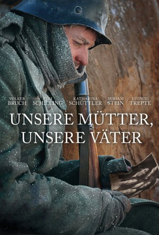

")
Alternativ: Generation War (Englischer Titel)
 
 IMDB-Wertung: 8.5 / 10
IMDB-Wertung: 8.5 / 10  Metascore:
Metascore: 
Sommer 1941: Fünf junge Menschen feiern Abschied. Drei von ihnen müssen an die Ostfront, zwei bleiben in Berlin. Doch alle Fünf sind sich sicher: Bis Weihnachten ist der Krieg gewonnen. Im Mittelpunkt des Dreiteilers „Unsere Mütter, unsere Väter“ steht das Leben dieser fünf Berliner Freunde, von ihrem Aufbruch im Sommer 1941 bis zu ihrem Wiedersehen – nicht Monate, sondern Jahre später – im Frühsommer 1945. Kriegsjahre, die in den exemplarischen Lebensläufen der Fünf ihre Spuren hinterlassen und die Generation unserer Eltern, Großeltern oder Urgroßeltern geprägt haben.
Jahr: 2013
Dauer: 90 Minuten
FSK:
Land: Deutschland Studio: ZDFTonspuren:
Untertitel:
Auflösung: 1080p (1920x1080) Größe: 5693 MB
Genre: Drama, Krieg, Geschichte, TV-Serie
Regisseur: Philipp Kadelbach
Drehbuch: Abe Sylvia
Soundtrack:
Darsteller:
 Tom Schilling als Friedhelm Winter
Tom Schilling als Friedhelm Winter Katharina Schüttler als Greta
Katharina Schüttler als Greta Ludwig Trepte als Viktor Goldstein
Ludwig Trepte als Viktor Goldstein Hildegard Schroedter als Oberschwester
Hildegard Schroedter als Oberschwester Sylvester Groth als Hiemer
Sylvester Groth als Hiemer Maxim Mehmet als Hauptmann Feigl
Maxim Mehmet als Hauptmann Feigl Trystan Pütter als Bertok
Trystan Pütter als Bertok Joel Basman als Bartel
Joel Basman als Bartel Samuel Finzi als Viktors Vater
Samuel Finzi als Viktors Vater Dorka Gryllus als Viktor's Mother
Dorka Gryllus als Viktor's Mother Ludwig Blochberger als Freitag
Ludwig Blochberger als Freitag Michael Ihnow als Francizek
Michael Ihnow als Francizek Sebastian Urzendowsky als Gespensterlegion Soldier
Sebastian Urzendowsky als Gespensterlegion Soldier Mark Waschke als Dorn
Mark Waschke als Dorn Götz Schubert als Dr. Jahn
Götz Schubert als Dr. Jahn Christiane Paul als Lilja
Christiane Paul als Lilja Johanna Gastdorf als Friedhelms Mutter
Johanna Gastdorf als Friedhelms Mutter David Zimmerschied als Schneider
David Zimmerschied als Schneider Tino Mewes als Zwei
Tino Mewes als Zwei Laurens Walter als Dorns Adjutant
Laurens Walter als Dorns Adjutant Thomas Arnold als Wirt
Thomas Arnold als WirtDatei: X:\HD-Serien\Unsere Mütter, unsere Väter\Unsere Mütter, unsere Väter E01 (2013, FSK, 1920x1080).mkv seit 04.07.2016
Festplatte: HD Serien(SU-Z)+Dokus+Musik
 Es gibt insgesamt 182 Filme in der Gruppe 'HD-Serien'
Es gibt insgesamt 182 Filme in der Gruppe 'HD-Serien'